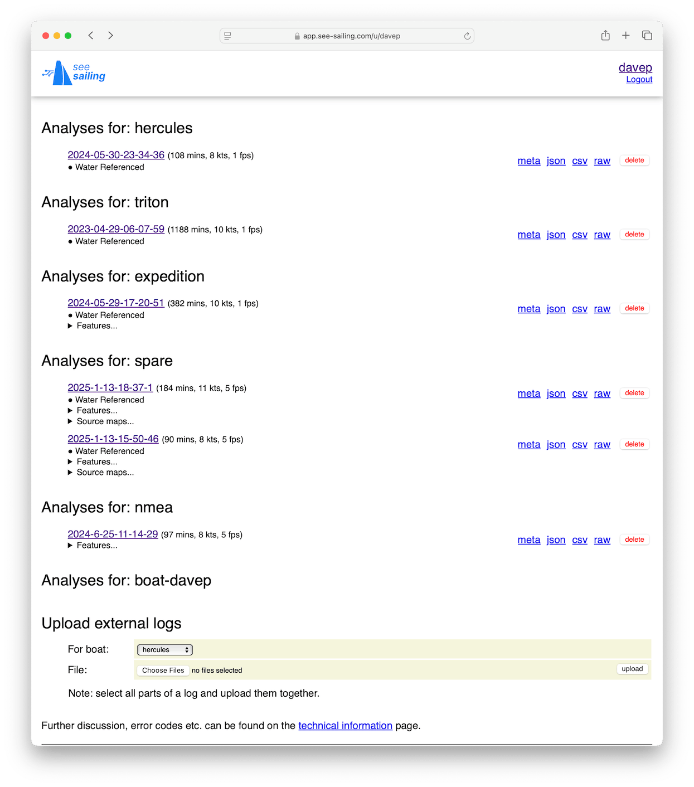
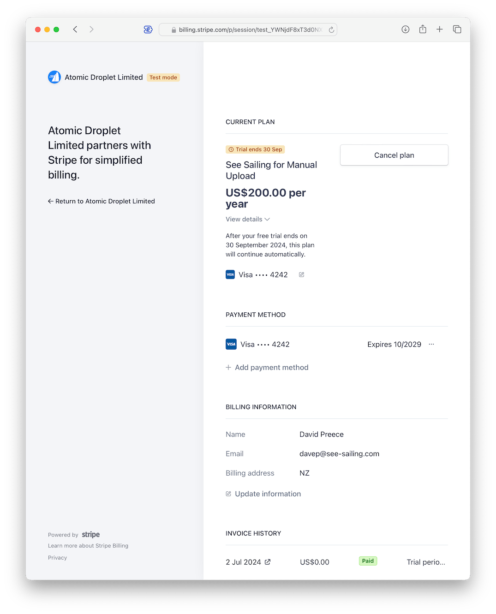

The email you received when you signed up had a link to your account page (something like https://app.see-sailing.com/u/yourname). Hopefully you've managed to log in and have a quick look at it by now.
This account has six boats (and six subscriptions) attached to it which is why it looks quite so full.
Each boat gets it's own analysis section, and within this section each uploaded recording is listed individually. Let's look at the one that used as a demonstration on the homepage...
2025-1-13-15-50-46 is the link you'll click to be taken to the web UI for each recording. You'll see that the recordings are referenced in a yyyy-mm-dd-hh-mm-ss format according to the first data sample in the recording (and not when it was uploaded). You'll see that there are a few hints next to the link regarding the recording's length, the maximumm speed reached during the recording, and the framerate at which the recording was delivered.
Water Referenced is a tag that appears if the calculations were performed using water referencing.
Features when expanded (click the triangle) lists the data and calculations which together make the features that will be visible on the ui.
Source maps when expanded (click the triangle) shows the maps between physical device, shown as it's NMEA identifier, and the channels of data the device provides. Advanced users can click individual sources to disable or enable them in order to filter analyses down to particular instruments - particularly if some prove to be misconfigured or otherwise troublesome.
meta json csv raw are links to download the data in four different formats: a collection of metadata in json format; the post-analysis data in json format; the post-analysis data in csv format; and the raw data as uploaded to See Sailing. The particulars of these are discussed further in the technical information page.
delete deletes this recording. There is no "undo" for this so use with caution.
The procedure for uploading logs in described in the quick start page. It's worded slightly strangely because See Sailing actually had the "hardware gateway" use-case implemented first.
These all work the same except for the password field. Just fill in the new value and press the 'save' button to the right. If there is some problem with your entry the box will be highlit in red along with an error message (and the change will not have taken effect).
The exception is the password field which, like most change password interfaces, requires that you type the new password in twice. Your password needs to be at least eight characters and will need to pass a number of other validations before it can be accepted.
Here are listed all the subscriptions on your account along with a traffic light: green for a subscription that is fine; yellow for one that has been cancelled but will remain active until the end of the paid-up period; and red for one that has expired. Once your subscription has expired you will still be able to use the data you uploaded previously, just not be able to upload any new recordings.
To cancel a subscription or manage other details relating to it (for instance to change the credit card used for payment), click the "cancel/manage" link. This will take you to a page hosted by Stripe who do subscription management and payments processing for See Sailing.
Note that "Atomic Droplet" is the name of the legal entity (A New Zealand company) that runs See Sailing.
This page has everything you need to manage the subscription. It tells you when the subscription will expire, provides a conspicuous "Cancel plan" button which will prevent you from being charged, can update your credit card, and provides downloads for invoices.
Shows the identifiers of any nmea gateways you own and which boats they are attached to. Click the link to be taken to the support page for that gateway.
Sends an email to get support. This does not (currently) create a support ticket but will probably have to before too long.